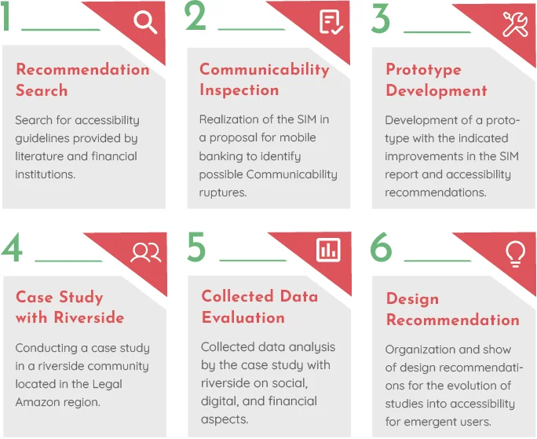
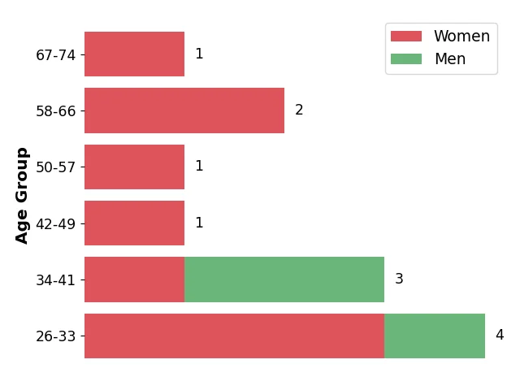
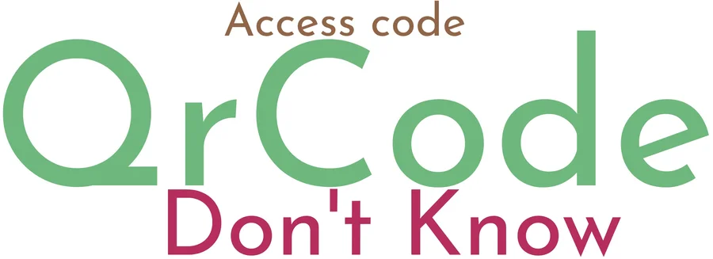
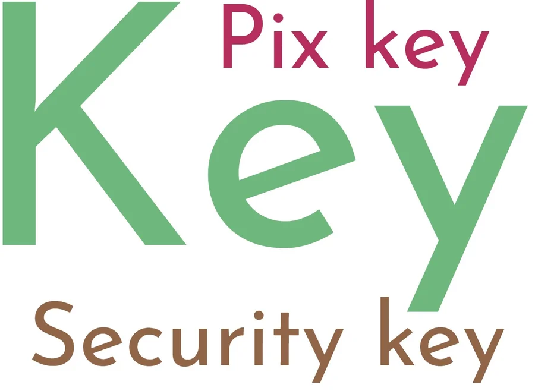
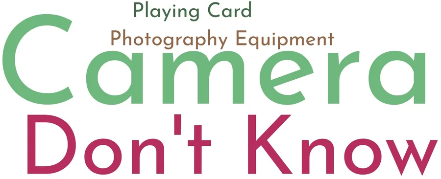

Resumo
O Pix foi criado para incluir financeiramente as pessoas, mas os aplicativos são pensados para quem já domina o celular e tem internet boa. Fomos a uma comunidade ribeirinha na Amazônia entender como as pessoas lidam com pagamentos digitais e testar um protótipo de Pix desenhado para elas. A maioria não reconheceu o símbolo do próprio Pix, e o estudo resultou em 14 recomendações de design para aplicativos de pagamento instantâneo.
Por que este projeto importa para mim
Meus avós são ribeirinhos. Conheço de perto a distância entre o que um aplicativo de banco espera do usuário e a realidade de quem vive à beira do rio, com internet limitada e pouco acesso à escola formal. Isso me ajudou a ler os dados com cuidado e sem julgamento.
O problema
Pessoas com pouca escolaridade, que moram longe dos centros urbanos e têm internet limitada, são chamadas na literatura de "usuários emergentes". Elas dependem cada vez mais de serviços digitais para receber aposentadoria, pensão e auxílios do governo. Mas as interfaces de pagamento usam ícones, termos e fluxos que pressupõem experiência prévia.
Pergunta de pesquisa
Que barreiras de comunicação as pessoas ribeirinhas encontram nos aplicativos de pagamento instantâneo, e o que é preciso para que consigam usar o Pix com autonomia?
Processo

- Inspeção de um aplicativo bancário e das regras do Banco Central para o Pix, para identificar requisitos de acessibilidade.
- Protótipo de pagamento instantâneo baseado em diretrizes para usuários emergentes: formulários curtos, instruções de até 50 caracteres e exemplos nos campos.
- Pesquisa de campo na comunidade, com sessões individuais em três etapas:
- Entrevista sobre renda, acesso à informação, uso do celular e relação com o banco.
- Análise de ícones em papel: as pessoas diziam o que cada símbolo significava para elas.
- Uso do protótipo em quatro tarefas: primeiro acesso, criar uma chave Pix, pagar e receber.
- Análise das gravações de voz e tela com o Método de Avaliação de Comunicabilidade, que classifica cada momento de confusão ("Cadê?", "E agora?", "Epa!", "O que é isso?").
- Recomendações de design a partir das evidências, cruzadas com a literatura.
Cuidados éticos: pesquisa aprovada pelo Comitê de Ética, com consentimento das participantes e dados anonimizados (P1 a P12).
Quem participou

- 9 mulheres e 3 homens, entre 26 e 74 anos.
- Rendas vindas da extração de açaí, da pesca, de aposentadoria, de pensão, de enfermagem, de cozinha e de aulas particulares.
- Escolaridade variada: do ensino fundamental incompleto até a graduação.
- Acesso à internet pelo celular, limitado pelos créditos de dados.
- Quase todos recebiam algum auxílio do governo, como o Bolsa Família.
Principais achados
1. Os ícones dos aplicativos não falavam a língua das pessoas



- 9 dos 12 participantes não entenderam o símbolo do Pix.
- O ícone de dinheiro foi lido como "câmera", "máquina fotográfica" ou "carta de baralho", e quatro pessoas não souberam dizer o que era.
- O ícone de chave foi entendido por todos, mas com sentidos diferentes, como "chave Pix" ou "chave de segurança".
2. A idade marcou a relação com o banco
As pessoas de 26 a 41 anos acompanhavam o saldo pelo aplicativo. As de 50 a 74 anos sabiam do pagamento pelo comprovante anterior, perguntavam a parentes ou iam até a agência, e relataram dificuldades com aplicativos.
3. A família é parte da jornada
Várias pessoas contaram com filhos ou parentes para fazer transferências. A ajuda de alguém de confiança é um recurso real de acesso, não um detalhe.
4. Houve 61 momentos de ruptura na comunicação
As rupturas se concentraram em quatro pontos: primeiro acesso, criação da chave Pix, pagamento e recebimento. Os mais frequentes foram "E agora?", "Cadê?" e "Epa!".
5. Ordem e exemplos reduziram a ansiedade
Os participantes disseram que a sequência das etapas os deixou mais tranquilos ao fazer um pagamento. Exemplos nos campos e textos de apoio ajudaram a preencher corretamente.
Recomendações de design (14 no total, destaco 6)
| Recomendação | Evidência |
|---|---|
| Aceitar e-mail, CPF ou telefone em um único campo, identificando o tipo automaticamente | As pessoas digitavam direto, sem escolher o tipo de chave |
| Usar ilustrações próximas de objetos reais e do contexto das pessoas | Ícones abstratos não foram reconhecidos |
| Dividir o pagamento em perguntas simples: "Quanto?", "Para quem?", "Por quê?" | Formulários longos e rolagem confundiam |
| Permitir voltar e corrigir uma etapa sem refazer tudo | Experiências anteriores frustrantes com aplicativos de banco |
| Mostrar as chaves já criadas na hora de receber | As pessoas precisavam digitar de novo a chave que tinham acabado de criar |
| Oferecer áudio e orientações animadas | Pouca familiaridade com texto e com aplicativos |
Limitações
- Um único estudo de caso, em uma comunidade, com 12 participantes.
- O protótipo não tinha todas as funções de um aplicativo de banco real.
O que eu aprendi
Ícones que parecem universais não são. O símbolo do Pix, conhecido em todo o país, não significava nada para a maioria das pessoas da comunidade. Pesquisar com quem vive longe dos centros urbanos exige deixar de lado o que o time considera "óbvio" e ouvir como cada pessoa realmente lê a interface.